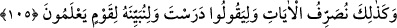
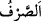
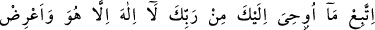
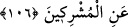

Kim basîret gözüyle, ebedî olan yüce ahiret mertebelerine bakar da Allah’a yakınlığın
kemâlâtını ve Allah’ın has kullarına hazırladığı hiçbir gözün görmediği, hiçbir kulağın
işitmediği ve hiçbir beşerin aklından geçmemiş olan nimetleri görürse, bu nimetleri
elde etmeye çalışır. Allah’ın yoluna sülûk etmeye yönelir, alçak dünyadan yüz çevirir,
ziynetlerini ve fânî şehvetlerini terkeder. İşte bu, insanın mutluluğu ve izzeti elde
etmesidir. Çünkü Allah âlemlerden müstağnîdir.
Kim de basîret gözüyle bu yüksek makamlara bakmaz, kalıbının gözü ile dünya ve
süslerine bakar da dünyanın şehvetlerinden ve hayvanî isteklerinden lezzet almaya
dalarsa basireti kör olur. “Zîrâ gözler kör olmaz, fakat göğüslerdeki kalpler kör
olur.” (el-Hacc, 22/46) İşte bu, insanın bedbahtlığı ve hüsranı elde etmesi demektir. et-
Te’vîlâtü’n-necmiyye’de böyle geçmektedir.
“Ben sizin üzerinize bekçi değilim”. Ben sadece bir korkutucu ve tebliğciyim. Sizi
gözetip tâkip eden Allah’dır. Amellerinizi kaydeder ve onlara göre size karşılığını
verir.
105. Böylece biz âyetleri geniş geniş açıklıyoruz ki, “Sen ders almışsın” desinler
de biz de anlayan toplum için Kur’an’ı iyice açıklayalım.
“İşte böylece” üstün manaları ortaya çıkaracak eşsiz bir anlatımla “ayetleri geniş
geniş açıklıyoruz.”
(
), “sarf” bir şeyi bir halden başka bir hale sokmak demektir.
“Ki “Sen okumuşsun desinler.” de” Yani, sonunda ‘Başkasından ders almışsın,
Seyyar ve Cübeyr gibi başkalarından okuyup öğrenmişsin.” desinler, demektir. Bu
kimseler, Rum esirlerinden Kureyşliler’e ait iki köle idi. Kureyşliler, Hz. Peygamber
(a.s.)’a: “Sen bu haberleri o iki köleden öğreniyor ve Allah tarafından geldiğini iddiâ
ederek bize okuyorsun.” diyorlardı.
“O sebeple biz, bilen bir toplum için onu”, Kur’an âyetlerini “iyice açıklayalım.”
Yani, âyetin baş tarafında ifade edilen geniş geniş açıklamanın (tasrif) amacı, iyice
açıklamaktır. Açıklamanın “bilen toplum”a tahsis edilmesi, istifade edecek olanların
onlar olması sebebiyledir.
106. Rabbinden sana vahyolunana uy. O’ndan başka tanrı yoktur. Müşriklerden
yüz çevir.
Ey Muhammed! “Rabbinden sana vahyolunana uy!” Her ne kadar müşrikler âyetlerin